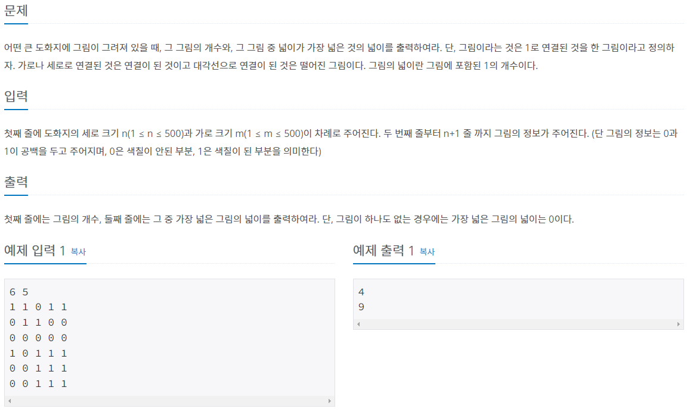
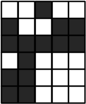
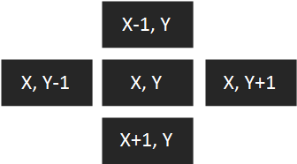
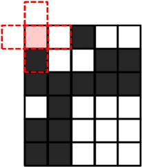
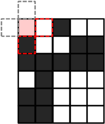
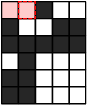
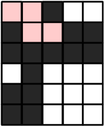

* 개인적인 공부 내용을 기록하는 용도로 작성한 글 이기에 잘못된 내용을 포함하고 있을 수 있습니다.
다음 포스팅은 BaaaaaaaaarkingDog님의 실전 알고리즘 강좌 0x09강-BFS 내용을 공부한 뒤 개인적인 공부 기록 용도로 다시 정리한 글 입니다.
내용 출처 : BaaaaaaaarkingDog | [실전 알고리즘] 0x09강 - BFS (encrypted.gg)
[실전 알고리즘] 0x09강 - BFS
안녕하세요 여러분, 드디어 올 것이 왔습니다. 마음의 준비를 단단히 하셔야 합니다.. 드디어 실전 알고리즘 강의에서 첫 번째 고비에 도달했는데 이 강의와 함께 이번 고비를 잘 헤쳐나가면 좋
blog.encrypted.gg
문제 출처 : 1926번: 그림 (acmicpc.net)
1926번: 그림
어떤 큰 도화지에 그림이 그려져 있을 때, 그 그림의 개수와, 그 그림 중 넓이가 가장 넓은 것의 넓이를 출력하여라. 단, 그림이라는 것은 1로 연결된 것을 한 그림이라고 정의하자. 가로나 세로
www.acmicpc.net
BFS 알고리즘 이란 ? 그래프 이론에서 모든 노드를 지나가기 위해서 구현된 알고리즘으로, 다차원 배열에서 각 칸을 방문할 때 "너비"를 우선으로 방문하는 알고리즘이다.
플러드 필 알고리즘 [Flood Fill Algorithm] 이란 ? 다차원 배열에서 특정 칸과 연결된 영역을 찾는 알고리즘이다. 플러드 필 알고리즘이 사용된 대표적인 예로 그림판의 색 채우기 명령이 있다. 이러한 플러드 필 알고리즘을 BFS를 이용해 구현할 수 있다.
BFS 구현
1. 시작하는 칸을 큐에 넣고 방문 표시를 남긴다.
2. 큐에서 원소를 꺼내어 해당하는 칸의 상화좌우로 인접한 칸에 대하여 3번을 진행한다.
3. 해당 칸을 이전에 방문했다면 아무 것도 수행하지 않고, 처음 방문 했다면 방문 표시를 남기고 해당 칸을 큐에 삽입한다.
4. 큐가 빌 때 까지 2번을 반복한다.
모든 칸이 큐에 한 번씩 들어가게 되기에 시간 복잡도는 칸이 N개 일때 O(N)이다.
BFS Flood Fill Algorithm을 연습하기 좋은 BOJ 1926 : 그림 문제를 통해 알아 보도록 하겠다.

BOJ 1926 그림 문제의 목표는 흰색으로 연결된 그림의 개수와 그림들 중 가장 넓은 그림의 넓이를 출력하는 것이다.

#define X first
#define Y second
int board[502][502];
bool vis[502][502];
int n,m;
int dx[4] = {1,0,-1,0};
int dy[4] = {0,1,0,-1};우선 탐색에 필요한 기본 변수들을 선언한다.
board 배열은 보드의 정보를 저장할 배열이다. (흰색 칸은 1, 검은색 칸은 0으로 표현한다.)
vis 배열은 보드의 특정 칸을 탐색했는 지를 판별할 때 사용할 배열이다. 해당 칸을 탐색했다면 true, 탐색하지 않았다면 false로 초기화한다.
변수 n, m은 각 각 행과 열을 의미한다.
dx, dy 배열은 특정 칸의 상하좌우를 탐색할 때 사용할 변수이다.
dx, dy 배열에 대해 부가적인 설명을 하자면 추후에 등장할 현재 칸의 위치에 대한 정보를 가지고 있는 cur (커서) 변수와 결합하여 사용할 예정이다. 여기서 x는 행 y는 열을 의미한다.
예를 들어 cur.X(현재 칸의 X좌표) + dx[0] , cur.Y(현재 칸의 Y좌표) + dy[0] 를 하면 "아래 방향"을 가리킨다.
혹은 cur.X(현재 칸의 X좌표) + dx[1] , cur.Y + dy[1] 을 하면 "우측 방향"을 가리킨다.

ios::sync_with_stdio(0);
cin.tie(0);
cin >> n >> m;
for (int i = 0; i < n; i++) {
for (int j = 0; j < m; j++) {
cin >> board[i][j];
}
}행과 열 그리고 보드의 정보를 입력받는다.
int num = 0; // 그림의 개수
int mx = 0; // 그림의 최대 넓이
for (int i = 0; i < n; i++) {
for (int j = 0; j < m; j++) {
if (board[i][j] == 0 || vis[i][j]) continue;
}
}그림의 개수를 저장할 num 변수, 그림의 최대 넓이를 저장할 mx 변수를 선언한다.
만약 board[i][j]가 0 즉, 검은색 이거나, vis[i][j]가 true 즉, 이미 방문한 칸 이라면 continue한다.
for (int i = 0; i < n; i++) {
for (int j = 0; j < m; j++) {
if (board[i][j] == 0 || vis[i][j]) continue;
num++; // 그림의 개수 추가
queue<pair<int,int>>Q;
// 시작하는 칸을 큐에 넣고 방문 표시를 남김.
Q.push({i,j});
vis[i][j] = 1;
}
}첫 번째 if 구절을 통과 했다면 이제 탐색을 시작한다.
시작하는 칸을 큐에 넣은 뒤, vis 배열을 이용해 방문 표시를 남긴다.
...
int area = 0; // 그림의 넓이를 저장할 변수
while (!Q.empty()) {
area++;
// cur : 현재 탐색하고 있는 칸을 가리킴
pair<int,int> cur = Q.front(); Q.pop();
// nx, ny : 현재 커서(cur)기준 상하좌우 탐색
for (int dir = 0; dir < 4; dir++) {
int nx = cur.X + dx[dir];
int ny = cur.Y + dy[dir];
}cur 변수에는 시작하는 칸 (0, 0)을 넣어 주고, 커서(cur) 변수와 nx, ny 변수를 이용해 커서기준 상하좌우를 탐색한다.

// nx, ny 가 범위를 벗어날 경우 continue;
if (nx < 0 || nx >= n || ny < 0 || ny >= m) continue;만약 nx, ny가 범위를 벗어난 경우 continue 해준다.

// nx, ny 가 방문한 칸을 탐색하거나, 검은색 칸을 탐색할 경우 continue;
if (vis[nx][ny] || board[nx][ny] != 1) continue;또한 nx, ny 가 방문한 칸을 탐색하거나, 검은색 칸을 탐색할 경우 continue 해준다.
단, 조심해야 할 부분은 위의 두 조건식의 순서가 바뀌어서는 안된다. 왜냐하면 두 번째 조건식이 앞으로 갈 경우 vis[-1][0]과 같은 케이스를 탐색할 수 있어 런타임 에러가 발생할 수 있다.
vis[nx][ny] = 1;
Q.push({nx,ny});예외 조건식을 모두 통과했다면 해당 칸에 방문했다는 표시를 남기고, 커서를 해당 칸으로 옮긴다.

mx = max(mx, area);마지막으로 area 변수에 저장된 값과 mx 값을 비교해 더 큰 값을 mx 변수에 저장 시켜 주면 된다.

# 전체 코드
#include <bits/stdc++.h>
using namespace std;
#define X first
#define Y second
int board[502][502];
bool vis[502][502];
int n,m;
int dx[4] = {1,0,-1,0};
int dy[4] = {0,1,0,-1};
int main() {
ios::sync_with_stdio(0);
cin.tie(0);
cin >> n >> m;
for (int i = 0; i < n; i++) {
for (int j = 0; j < m; j++) {
cin >> board[i][j];
}
}
int num = 0; // 그림의 개수
int mx = 0; // 그림의 최대 넓이
for (int i = 0; i < n; i++) {
for (int j = 0; j < m; j++) {
if (board[i][j] == 0 || vis[i][j]) continue;
num++; // 그림의 개수 추가
queue<pair<int,int>>Q;
// 시작하는 칸을 큐에 넣고 방문 표시를 남김.
Q.push({i,j});
vis[i][j] = 1;
int area = 0; // 그림의 넓이를 저장할 변수
while (!Q.empty()) {
area++;
// cur : 현재 탐색하고 있는 칸을 가리킴
pair<int,int> cur = Q.front(); Q.pop();
// nx, ny : 현재 커서(cur)기준 상하좌우 탐색
for (int dir = 0; dir < 4; dir++) {
int nx = cur.X + dx[dir];
int ny = cur.Y + dy[dir];
// nx, ny 가 범위를 벗어날 경우 continue;
if (nx < 0 || nx >= n || ny < 0 || ny >= m) continue;
// nx, ny 가 방문한 칸을 탐색하거나, 검은색 칸을 탐색할 경우 continue;
if (vis[nx][ny] || board[nx][ny] != 1) continue;
vis[nx][ny] = 1;
Q.push({nx,ny});
}
mx = max(mx, area);
}
}
}
cout << num << '\n' << mx;
}